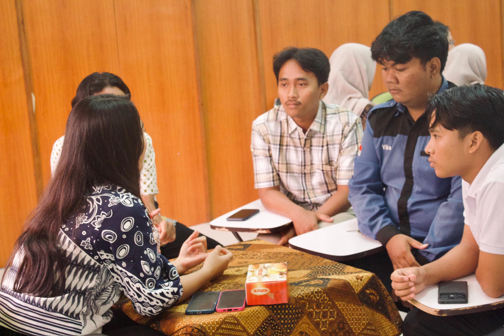

Public Speaking, Hosting & Volunteering.
A blend of public speaking, hosting, creative content, and volunteering experiences that sharpened my communication, adaptability, and teamwork beyond the classroom.
Information Systems Orientation
As an outstanding student, I delivered sessions for two consecutive years at the department orientation, sharing practical insights to help new students adapt to campus life and prepare for their academic journey.


Faculty of Agriculture Orientation
Invited as a guest speaker to share my experiences on how to secure scholarships and become an active student, providing practical tips and motivation to help new students build confidence and make the most of their campus life.
Campus & External Events
Frequently hosted and led campus and external events, ensuring the flow of each event ran smoothly while actively engaging with the audience to create a lively and memorable atmosphere.
Campus & External Events
Facilitated discussions and Q&A sessions during campus and external events, ensuring conversations stayed on track and all speakers had the opportunity to share their insights.
BARATI CUP International 2025
Served as a content creator volunteer for an international sporting event, capturing key moments and creating promotional content to boost event visibility.
DESTANA
Contributed to community development programs by introducing technology to remote villages, helping to broaden their horizons and open their eyes to the outside world that they rarely have access to.
Content Creator
Appeared as on-camera talent for various campus and external content productions, helping to promote events and initiatives through engaging visual media.